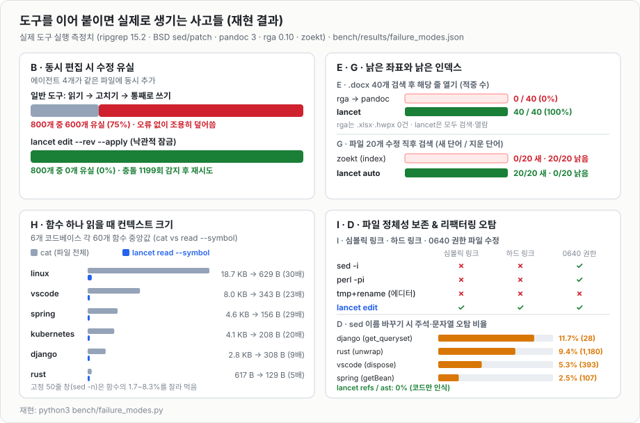

아키텍처와 내부 구조
좌표 통일, OS 파일 잠금 & 파일 정체성 보존
src/edit.rs가 심볼릭 링크, nlink > 1 하드 링크, 권한, 소유자, 크래시 안전 쓰기를 보장하는 내부 구조.
왜 읽기, AST 파싱, diff, 쓰기를 바이너리 하나에 넣었을까요? CLI 도구 체인에서 사고는 항상 도구와 도구 사이에서 발생하며, Lancet의 모든 쓰기 명령은 src/edit.rs의 단일 안전 경로를 공유하기 때문입니다.

실제 도구 체인에서 재현된 7가지 사고#
| 도구 체인 | 재현된 사고 | Lancet의 해결 방식 |
|---|---|---|
rg -n → sed -i 2회 | 두 번째 수정이 밀린 줄을 고치고 종료 0 | edit --edits가 모든 hunk를 원본 줄 번호로 해석 |
| 에이전트 4개: 읽기 → 수정 → 쓰기 | 800건 중 600건 조용히 유실 | edit --rev: 800건 중 0건 유실; 패자는 conflict |
낡은 hunk 포함 patch -p1 | A 파일만 바뀌고 B는 거부: 반쪽 패치 | patch: 전 파일 사전 검증 + 경합 시 롤백 |
sed 심볼 이름 변경 | 주석·문자열까지 0.3~11.7% 오염 | refs/ast는 코드만 대상; rename은 로컬 스코프 증명 |
.docx에 rga → pandoc | 검색 줄과 읽기 줄 40개 중 0개 일치 | 40개 중 40개: 검색·읽기가 같은 추출기 사용 |
파일 20개 수정 직후 zoekt | 새 단어 0건, 지운 단어 20건 계속 출력 | auto 모드: 즉시 새 단어 20건, 삭제 0건 |
sed -i / perl -pi | 심볼릭/하드 링크 파손 및 0640 권한 소실 | 심볼릭 링크, 다중 하드 링크(nlink > 1), 권한·소유자 보존 |
공유 읽기 잠금 & 배타적 write_if_rev CAS#
read_shared: 공유 OS 잠금(lock_shared())을 잡고same_file(&f, path)로 파일 교체를 검증한 뒤(Windows 공유 경합 시 최대 16×5 ms 재시도), 16자리 16진수rev = XXH3-64(bytes)를 계산합니다.write_if_rev: 배타적 OS 잠금(f.lock()) 아래 현재 바이트의inode와rev == expect_rev를 재확인하며, 불일치 시 1바이트도 쓰지 않고WriteError::Conflict { now }(종료2)를 반환합니다.
write_atomic의 파일 정체성 및 충돌 안전성#
단순한 임시 파일 덮어쓰기(rename)는 심볼릭 링크를 일반 파일로 바꾸고 하드 링크를 끊어 버립니다. src/edit.rs의 write_atomic은 4단계를 지킵니다:
- 심볼릭 링크 먼저 따라가기:
fs::canonicalize(path)로 실제 대상 경로를 얻어 심볼릭 링크 자체는 그대로 유지합니다. - 임시 파일
fsync& 속성 복사: 고유한.{name}.lancet-tmp.{pid}.{seq}에 먼저 기록하고f.sync_all()까지 마친 뒤(디스크가 꽉 차면 원본을 건드리기 전에 실패) 권한과 Unixuid/gid를 복사합니다. - 다중 하드 링크 보존:
nlink() > 1이면 rename 대신 기존 inode를 제자리(in-place)에서 덮어쓰고sync_all()해 다른 하드 링크 경로가 낡은 내용을 보지 않게 합니다. - 원자적 공개 + 디렉터리 동기화: 단일 링크 파일은
fs::rename후sync_dir(parent)를 호출해 전원 차단 중에도 반쪽 파일을 남기지 않습니다.